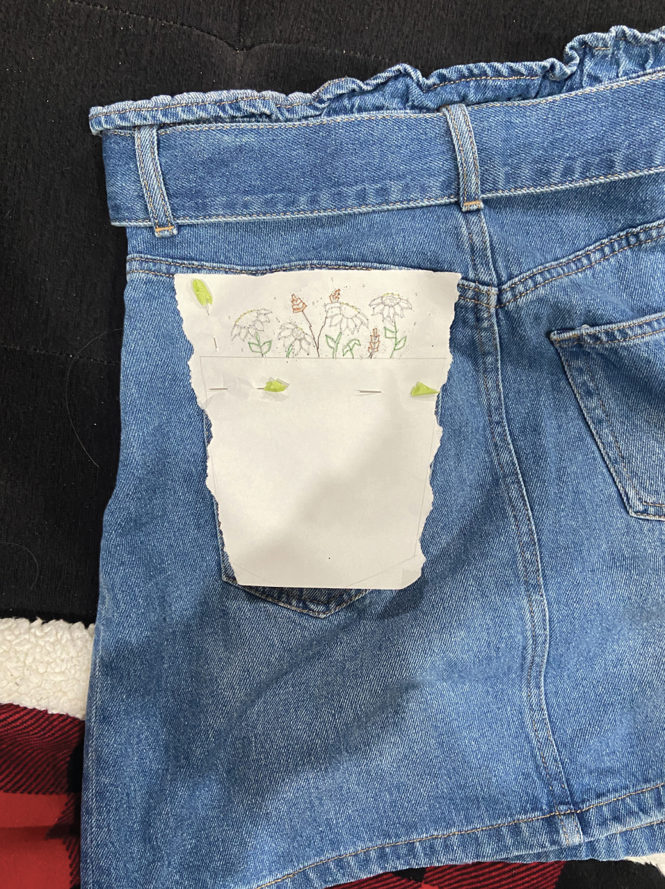
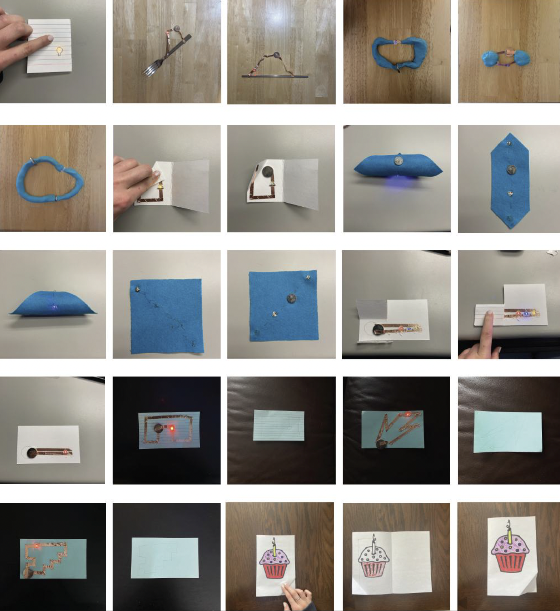
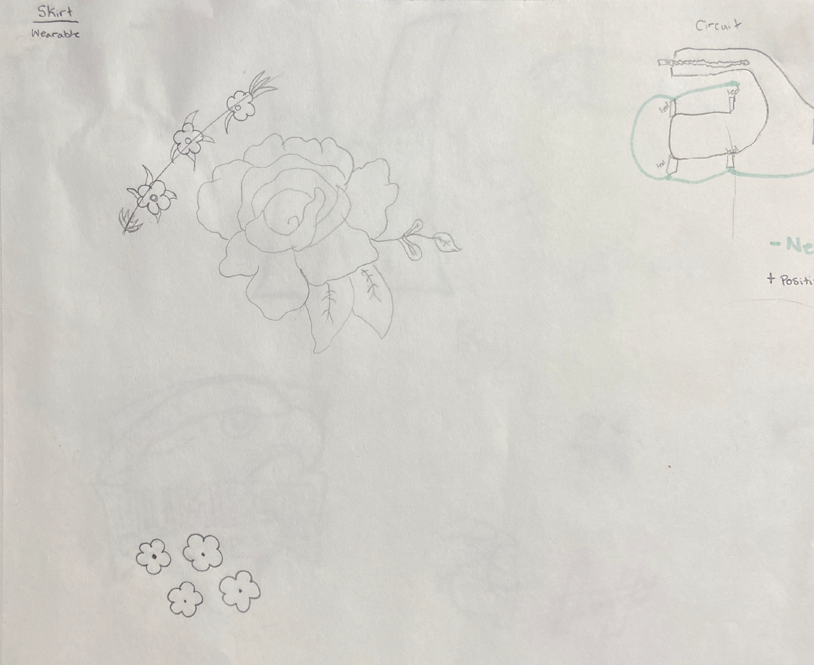
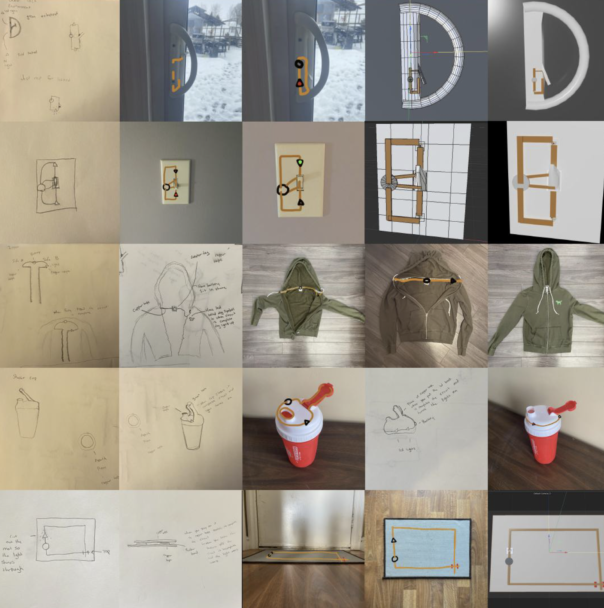
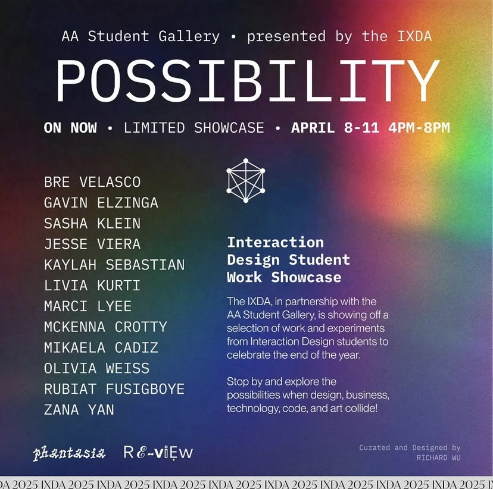
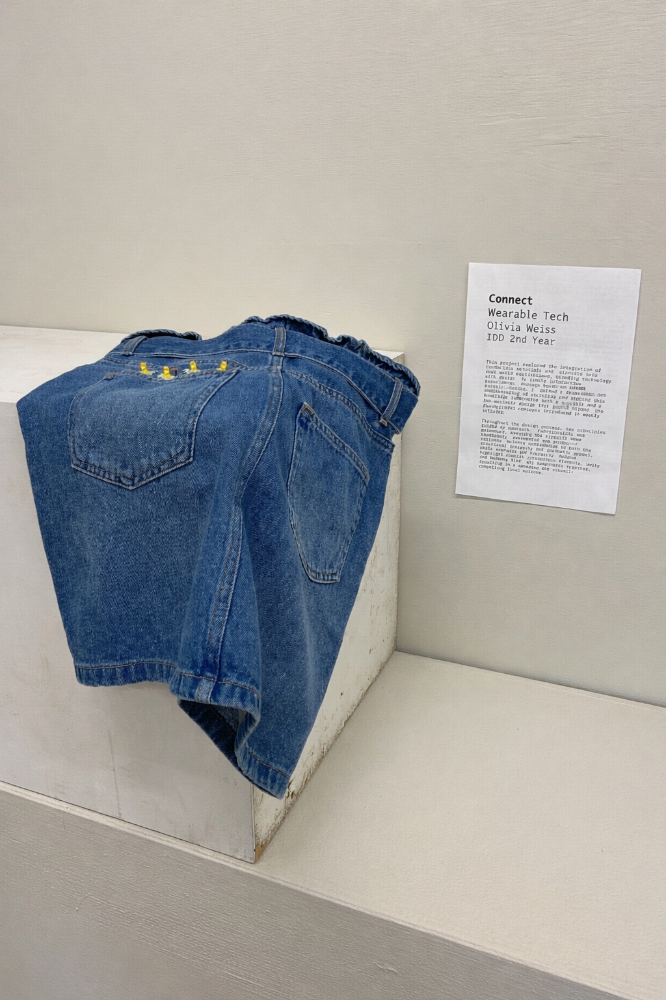

Connect: Circuits and Interactions
Wearable Technology + Craft
Integrating conductive materials into a wearable garment, making circuits functional yet invisible through precise embroidery and layered construction.

What
An interactive wearable featuring embedded circuits made from conductive thread and fabric, designed to respond to user interaction without compromising the garment's visual design. The circuits are functional yet invisible, integrated through precise embroidery techniques.

Why
To explore how technology can be integrated into clothing in ways that respect both form and function, creating interactive wearables that feel cohesive rather than visibly technical.
Problem / Opportunity
Wearable technology often struggles with the visibility of circuits, making garments look overtly technical. By using conductive materials and precise embroidery, the circuits become invisible within the fabric, allowing the garment to remain visually balanced while still functioning as an interactive piece.
Key Features

⚡ Interactivity
Circuits respond seamlessly to user interaction, creating an engaging and responsive wearable experience.

🧵 Precision Embroidery
Conductive thread and fabric were embedded so subtly that they become invisible within the design, maintaining aesthetic integrity through precise stitching.
Process and Exploration



Outcome
The embroidered skirt was selected for exhibition in the Sheridan gallery, demonstrating how technology can be seamlessly integrated into wearables. The project successfully balanced form and function, creating an interactive garment where circuits enhance rather than disrupt the aesthetic.
This work validates the importance of blending technical skill with aesthetic intention, proving that circuits don't need to be visible to be effective.